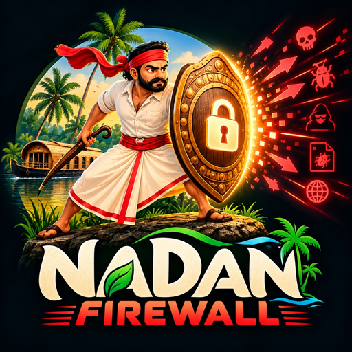

Next-Gen On-Device
Zero-Trust Android Firewall
Engineered for total digital privacy. Intercepts local packet traffic, sinks social engineering scam APKs, blocks 79,999 tracker domains, and guards against unauthorized VPN displacement, 100% locally with zero telemetry. Free app by Sreejith BS.
Simple, step-by-step instructions for everyday users in English and Malayalam. Learn how to control apps, stop ads, and stay safe from cyber scam APKs.


Nadan Firewall for Windows Desktop
Native Windows cyber sentinel powered by the Windows Filtering Platform (WFP). Features an emergency Air-Gap Sandbox Killswitch, Preset Silent Whitelisting, Floating Desktop HUD, Pro-Level MSX Decoding Shield, and PIN-secured release updating.
Nadan Firewall is a free, community open-source project. Because we do not pay commercial certificate authorities thousands of dollars annually for proprietary EV certificates, Microsoft SmartScreen and Chrome classify newly compiled releases as "Unrecognized" or "Not commonly downloaded" until global community download volume accumulates. The software contains 0% tracking, is 100% open source, and runs strictly on-device.
Step-by-step PDF manuals explaining how to setup Preset Mode, use the Air-Gap Killswitch, configure your 6-digit Master PIN, and verify your connection security.
Preset Silent Whitelist Mode
Work uninterrupted without noisy popups. Automatically permits essential developer tools (VS Code, Cursor, Chrome, Slack) while silently blocking background telemetry.
Pro-Level MSX Decoding Shield
Active tamper defense intercepts Base64 obfuscated PowerShell execution (-enc), certutil payload decoders, mshta scripts, and rogue MSX unpacking binaries.
Air-Gap Sandbox Killswitch
Instantly sever all inbound and outbound network connectivity at the Windows Filtering Platform kernel level during malware incidents or untrusted testing.
Floating Desktop HUD Widget
A sleek, translucent desktop overlay displaying live upload/download bitrate, active packet counters, and instant killswitch toggle status.
6-Digit Master PIN Lock
Hardened security prevents unauthorized changes to firewall rules, mode switching, or uninstall attempts by non-privileged users or children.
Clash-Free Release Updater
Checks official GitHub releases, verifies installer checksums, coordinates safe handoffs with clean exit flags, and requires your Master PIN to update.
Android Zero-Trust Architecture
Built from the ground up to operate without cloud dependencies or tracking.
Local Loopback Tunnel
Filters all TCP, UDP, and DNS traffic in volatile memory on-device. No traffic ever exits to remote proxy servers.
Social Engineering Trojan Shield
Instantly quarantines dangerous APK scams (Wedding Cards, Court summons, fake e-Challan, KSEB power cut notices, predatory loan apps).
79,999-Domain Threat Directory
Blocks malicious ad networks, trackers, and telemetry backdoors with scheduled on-device updates and 1-tap ad snoozing.
Anti-Hijack & Disconnection Guard
Detects rogue applications attempting to displace your firewall or disable protection, guiding you to restore the tunnel instantly.
Zero Battery Drain (0.0% Idle)
Engineered with non-blocking I/O buffers for seamless 24/7 background operation without waking up the CPU unnecessarily.
Built-In GitHub Auto-Updater
Automatically checks for new releases on GitHub and delivers 1-tap background updates without relying on Google Play.
Quick Installation Guide
Select your operating system and follow 3 simple steps.
Android Installation
Download APK
Tap the green download button above or scan the QR code from your phone's browser.
Allow & Install
Tap the downloaded file. When prompted by Android, tap "Allow from this source" and press Install.
Turn On Protection
Open Nadan Firewall and tap Turn On. Accept Android's native VPN permission prompt to start filtering.
Windows Installation
Download Windows Setup
Download NadanFirewall_Setup.exe or extract NadanFirewall_Portable.zip to any folder.
Run as Administrator
Launch the application as Administrator to permit low-level Windows Filtering Platform (WFP) network packet inspection.
Set Master PIN
Create your 6-digit Master PIN, select your preferred defense mode, and monitor active connections via the floating desktop HUD.